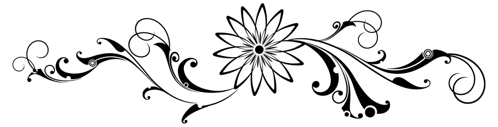
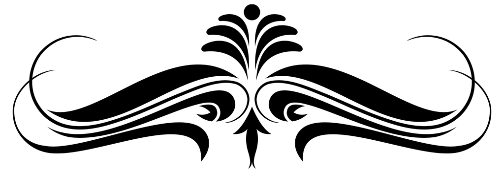
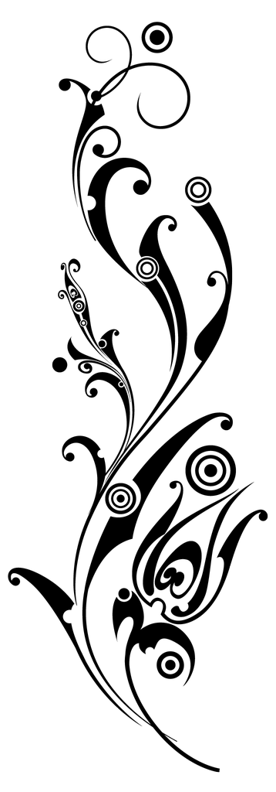
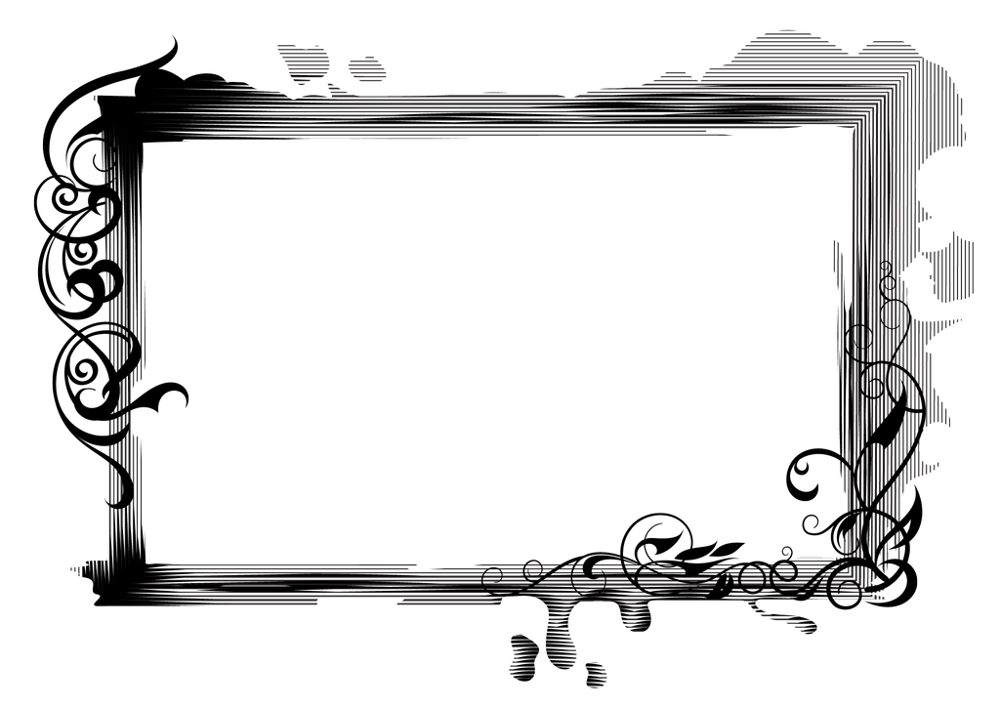
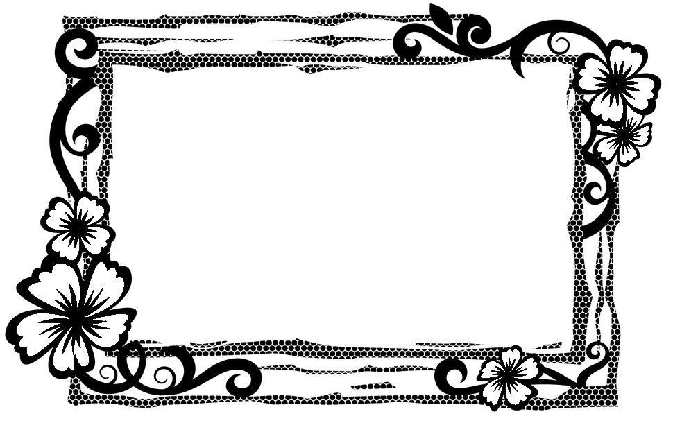
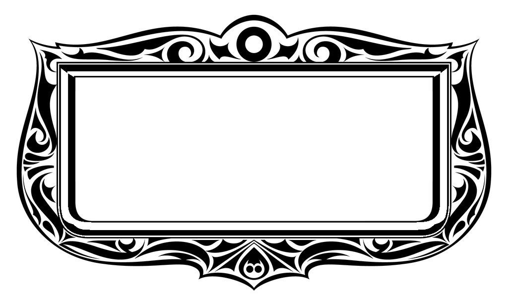
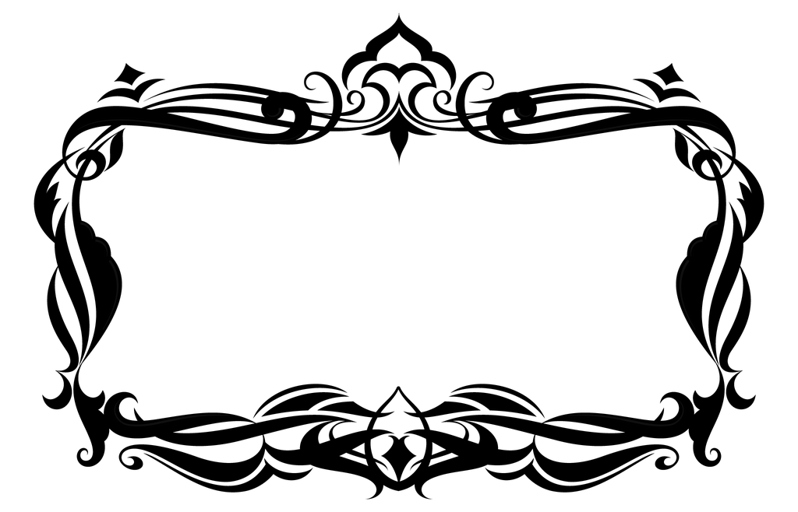

Ornaments
Overview
Ornaments is a decorative classes library that uses images and fancy CSS to further enhance and enlighten elements. These include:
- Wallpapers & Patterns
- Accents
- Frames
- Seals
Wallpapers & Patterns
SOURCE: css/backgrounds.css
Wallpapers and Patterns are backgrounds that can be tiled seamlessly.
WALLPAPERS are colorful solid backgrounds.
PATTERNS have transparent backgrounds, ideal for creating a texture.
Wallpapers
To create a wallpaper background, apply classes to a div element like so: .wallpaper.class-name, where class-name is any of the following:
- .always-curly
- .arabian-curtain
- .awaiting-blossoms
- .beckoning-ocean
- .branching
- .brass-inlay
- .breaking-circles
- .carved
- .cherry-mousse
- .cloudy
- .coco-puffs
- .copper-lining
- .crimson-hooks
- .crinkled
- .crystal-flames
- .curling-gold
- .curvy-stencil
- .evolution
- .fabric-sapphire
- .falling-flames
- .fragility
- .gilded
- .grated
- .growing
- .grunge-remains
- .heels
- .keep-painting
- .leaf-swirl
- .lilies
- .lost-temple
- .masai-masks
- .old-lace
- .opposition
- .ornate
- .pacing
- .regality
- .rhombus-wall
- .sculpting
- .steady
- .sultan
- .sunburnt
- .tossed-vines
- .uncovering
- .vibrant-mix
- .victoran-lace
- .vine-panels
- .volary-vogue
- .warmth
- .widow
- .yoyo
Patterns
To create a pattern background, apply classes to a div element like so: .pattern.class-name, where class-name is any of the following:
- .airwave-code
- .baby-curls
- .cloud-formation
- .cocoa-swirls
- .cognitive
- .collar-lips
- .crazy-curls
- .crested
- .curly-sue
- .curve-ahead
- .cutting-gears
- .feather-bed
- .floral-ink
- .forged-curls
- .hypnosis
- .maintain-curls
- .nearly-there
- .opening-octagons
- .peering
- .petal-balance
- .phantom-flames
- .portuguese-stone
- .pyramid-quest
- .regency
- .rooted
- .scribbles
- .slithering
- .smeared
- .snakepit
- .splitting
- .squeezed
- .stillness
- .targeting
- .tightened
- .trapped-circles
- .travesty
- .turning-point
- .twissel
- .vertical-leaves
- .zebra-waves
Tiling, Positioning, & Sizing
To create a repeating background wallpaper or pattern, we can apply any of the following classes:
.tiled - repeats on both x- and y-axis
.tiled-x - repeats only on x-axis (horizontal)
.tiled-y - repeats only on y-axis (vertical)
We can position the background image by applying any of the following classes:
.bp-ct - center top
.bp-cc - center center
.bp-cb - center bottom
.bp-lt - left top
.bp-lc - left center
.bp-lb - left bottom
.bp-rt - right top
.bp-rc right center
.bp-rb - right bottom
.bg-fixed - keeps background stuck in place while scrolling
We can also adjust the background image size by applying any of the following classes:
.bs-60 - 60 x 60 px
.bs-90 - 90 x 90 px
.bs-120 - 120 x 120 px
.bs-240 - 240 x 240 px
.bs-360 - 360 x 360 px
.bs-420 - 420 x 420 px
.contain - resizes to best fit
.cover - resizes to cover entire container
.fill - resizes to 100% x 100%
Wallpaper Example
Tiled "curling-gold" wallpaper, size set to 240px:
.wallpaper.tiled.bs-240.curling-gold
Pattern Example
Tiled "stillness" pattern, size set to 90px, with a background-color using the --accent variable:
.pattern.tiled.bs-90.stillness
Accents
SOURCE: css/accents.css
Accents are decorative ornaments using transparent PNG images (found in the css/images/ornaments directory). Using the mask CSS property, the color can be specified using the --accent variable, and the size scales are determined using an aspect-ratio. To display an accent ornament, use the following markup:
<div class="accent class"></div>
Where class is any of the following:
.attuned
.blooming-branch
.carefree
.carving
.daisy-div
.emblem
.excel
.fine-vine
.genesis
.graceful
.grandiose
.growth
.heartspring
.heraldry
.influence
.majesty
.nurture
.overarch
.redemption
.regality
.regency
.ring-scroll
.ruling
.seeded
.sensuous
.spiritual
.sproutling
.squire
.valor
.wheatgrass
SIZING
By default, Accents occupy 100% of the width of their containers. However, by adding any of the following classes, we can limit the size. We'll use the graceful accent as an example.
.micro - 5% width
.small - 15% width
.medium - 25% width
.large - 35% width
.xlarge - 50% width
.accent.carefree.micro
.accent.carefree.small
.accent.carefree.medium
.accent.carefree.large
.accent.carefree.xlarge
POSITIONING & FLIPPING
Accents can be absolute-positioned within a container. They can also be flipped horizontally or vertically.
.t-l - top left
.t-r - top right
.b-l - bottom left
.b-r - bottom right
.flip-x - horizontal flip
.flip-y - vertical flip
.flip-xy - flip both horizontally and vertically
.accent.carefree.small
.accent.carefree.small.flip-xy
In the demo below, we apply both position and flip classes to accent ornaments within a relative-positioned container.
Accentuated Demo
A carefree essence of decorative ornamentation.
TIP: Wrap positioned accents within a container that is of relative position.
Lace
SOURCE: css/lace.css
Add a pure CSS lace accent to any element. Customize the lace color by chaning the CSS variable: --lacecolor.
.lace.strand
.lace.round
.lace.knotted
.lace.braided
.lace.complex
.lace.intricate
.lace.loop
Frames
SOURCE: css/frames.css
Frames are elements with fancy borders. All use the --accent variable. The following are pure CSS, and have pre-defined padding:
.stamp-frame
.inception-frame
.radial-frame
.scoop-frame
IMAGE-BASED
Below are frames that use PNG images (found in the
<div class="class-name-frame">
<div class="frame"></div>
...content items...
</div>
Where class-name-frame is any of the following:
.ceremony-frame
.coronation-frame
.finesse-frame
.fine-tune-frame
.florist-frame
.overlord-frame
.radial-portrait-frame

.sovereign-frame
.splatter-portrait-frame
.wrapping-frame
Image Frame Example
In the example below, we use a tiled wallpaper image as the frame, giving it some texture.
Coronation
A crowning achievement!
Working With Frames
Frames use an aspect-ratio to match the dimensions of the PNG images, so they are restricted in width and height (although they scale to fit their container). By default, there is no padding, so this will needed to be added as necessary.
Because the frame is layered atop the framed content, it may be useful to wrap the whole frame within an a tag, especially if it needs to be hyperllinked.
Seals
SOURCE: css/seals.css
Seals are circular accent elements with elaborate edge shape patterns. These use the --tertiary variable for the background color, and the --accent variable for font and border colors. To create a seal, apply classes to a div element like so: .seal.class-name, where class-name is any of the following:
IMAGE SEAL.
If an image is placed within a seal, it is auto-cropped to best fit.